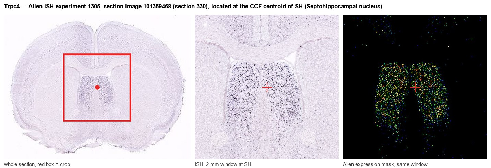

Trpc4
Short transient receptor potential channel 4 (TrpC4) (Capacitative calcium entry channel Trp4) (Receptor-activated cation channel TRP4)
Spatial tier: REGION_BIASED · Class: ION_CHANNEL · Top region: SH (Septohippocampal nucleus) · Positive regions: 35/554
43.0Discovery Score
42.1Targetability Score
CEvidence grade C
What this means: Trpc4: fine CCF profile is region-biased toward SH (top regions: SH, CA1sp, CA2sp, LSr, CA2so); this is a discovery lead, not direct proof.
Function in SH: evidence, prediction, innovation
- Gene function
- TRPC4 is a receptor-operated, calcium-permeable non-selective cation channel of the canonical TRP family. It is activated downstream of Gq/PLC signalling (and Gi in some cells), usually as a TRPC1/TRPC4 heteromer, and produces a slow depolarising current that underlies plateau potentials and persistent firing after metabotropic receptor activation. Its brain expression is unusually restricted, with the septum among the highest sites.
- Region function
- The septohippocampal nucleus is a small midline septal cell group at the rostral tip of the septum, contiguous with the medial/lateral septal complex that supplies cholinergic and GABAergic input to hippocampus and paces the hippocampal theta rhythm.
- Published in this region
- inferred No region-specific literature found for the septohippocampal nucleus itself. The closest findings are immediately adjacent: Phelan 2012 showed heteromeric TRPC1/4 channels in lateral septal neurons drive epileptiform burst firing and seizure-induced neurodegeneration, and Phelan 2023 pharmacologically distinguished native homomeric TRPC4 from TRPC1/4 heteromers in the same lateral septal neurons.
- Predicted function
- Prediction: in septohippocampal neurons TRPC4 should convert metabotropic input (muscarinic, group I mGluR, CCK) into a slow depolarising plateau current that sustains rhythmic burst firing, making it a candidate conductance for pacing the septal contribution to hippocampal theta. Trpc4 knockout or local block with ML204/HC-070 is predicted to shorten plateau potentials, reduce persistent firing and weaken theta power and theta-locked septal output, with downstream effects on spatial memory and on seizure susceptibility in the septo-hippocampal axis.
- Innovation
- ★★★★☆ 4/5 TRPC4 physiology is established in lateral septum but nobody has addressed the septohippocampal nucleus or the theta-pacing consequence, and selective blockers now exist.
- Tools
- Trpc4 knockout mice and Trpc1/Trpc4 double knockouts; selective blockers ML204, HC-070 and Pico145; agonist (-)-englerin A; anti-TRPC4 antibodies; septal targeting with ChAT-Cre, Pvalb-Cre and Vgat-Cre.
- References
Direct evidence located at the region

Allen ISH experiment 1305, section image 101359468 (section 330): the section that contains the CCF centroid of Septohippocampal nucleus according to the Allen image-to-atlas alignment (reference_to_image), with a 2 mm window around that point. Left: whole section, red box = window. Middle: ISH signal. Right: Allen's expression-mask view of the same window. open this image in the Allen viewer
Look it up yourself: Allen Mouse Brain ISH for Trpc4Allen reference atlas: SH (structure 333)ABC Atlas MERFISH viewer(in the ABC Atlas choose dataset MERFISH-C57BL6J-638850-CCF, colour cells by gene "Trpc4" or by parcellation_substructure "SH")All genes confined to SH + 3-D brain
Direct spatial evidence
MERFISH REGION LOCATOR

Regional expression figure

Predicted WMB × fine-CCF profile; not direct full-transcriptome spatial measurement.
Spatial profile
Evidence and specificity
- Evidence status
- PREDICTED_FINE
- Direct sources
- None; predicted localization only
- Exclusive threshold
- 12 positive regions out of 554
- Spatial specificity
- 0.316
- Top-region fraction
- 0.042
- Filter status
- PASS
Interpretation limits
- Cell-type-to-region projection is imputed expression, not direct spatial measurement.
- Adult reference atlases do not establish stability across age, sex, strain, state, or disease.
- Transcript abundance does not guarantee protein abundance or genetic-tool performance.